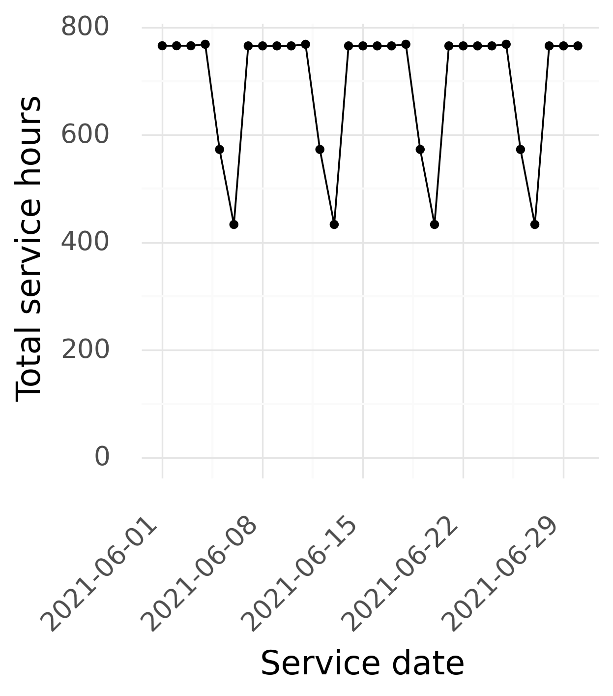
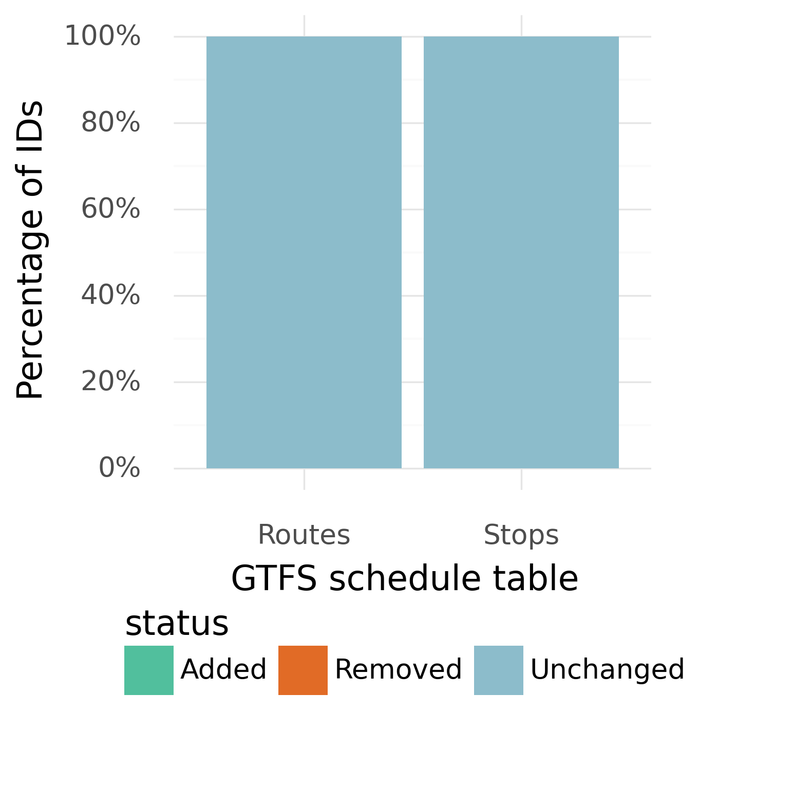

This is a monthly report, generated by the California Integrated Travel Project (Cal-ITP), summarizing issues discovered by MobilityData’s GTFS Validator. This report is available for viewing by the general public to support continuous improvement of GTFS data and the experience of transit passengers.


| Do the following files/fields exist? | 2021-05-02 | 2021-05-16 | 2021-05-30 | |
|---|---|---|---|---|
| Visual display | shapes.txt | |||
| Navigation | levels.txt | |||
| pathways.txt | ||||
| Fares | fare_leg_rules | |||
| fare_rules.txt | ||||
| Technical contacts | feed_info.txt | |||
| Validation errors observed: [NUMBER] | ||||
|---|---|---|---|---|
| leading_or_trailing_whitespaces | The value in CSV file has leading or trailing whitespaces. | routes.txt: Route 19 stops.txt: Ventura Ave & Park Row stops.txt: Ventura Ave & Shell stops.txt: Moorpark College stops.txt: Ventura Ave & Center stops.txt: Hueneme & Surfside stops.txt: Ventura Ave & DeAnza stops.txt: Tapo Street and Alamo Street stops.txt: Hwy 33 & Arroyo Mob Home stops.txt: Hwy 33 & Oak Dell stops.txt: Chatsworth Metrolink Station stops.txt: Hwy 33 & Barbara stops.txt: Ventura Cty. Public Health stops.txt: Hwy 33 & Oak View stops.txt: Hwy 33 & Sulphur stops.txt: HWY 150 & HWY 33 stops.txt: Ventura Ave & McKee stops.txt: Ventura Ave & Los Cabos stops.txt: McCampbell St. & Wileman St. stops.txt: Ventura Ave & Fraser stops.txt: Pleasant Valley Hospital stops.txt: B St. & Wileman St. stops.txt: Ventura Ave & Seneca stops.txt: Royal Ave at Naples stops.txt: Ventura Rd & Pleasant Valley stops.txt: Ventura Rd & Sunkist stops.txt: El Paso St. & Sierra Vista Ave. stops.txt: Barbara Webster School stops.txt: Spur & Wagon Wheel stops.txt: Hwy 33 & Cntry Village Mob Home stops.txt: St. John's Hsp. stops.txt: Hwy 33 & Sycamore stops.txt: Ventura Ave & Canada Larga stops.txt: Sespe Ave. & Burson Ln. stops.txt: Ventura Ave & Norway stops.txt: Royal Ave at Madera Road stops.txt: Cochran and Stearns routes.txt: Trolley stops.txt: Hwy 33 & Woodland stops.txt: Hwy 33 & Casitas stops.txt: Ventura & Clara stops.txt: Ventura (Guitar Ctr) stops.txt: Santa Fe St. & Reading St. stops.txt: Hwy 33 & Larmier stops.txt: Ventura Ave & Ramona routes.txt: Trolley stops.txt: Hwy 33 & Loma stops.txt: Hwy 33 & Baldwin stops.txt: Ventura Ave & Vince stops.txt: Lemon Drive and Alamo stops.txt: Ventura Ave & Warner | stops.txt: Ventura Ave & Ramona stops.txt: Hueneme & Surfside stops.txt: Hwy 33 & Casitas stops.txt: Ventura (Guitar Ctr) stops.txt: Ventura Rd & Pleasant Valley stops.txt: Lemon Drive and Alamo stops.txt: Santa Fe St. & Reading St. stops.txt: Ventura Ave & Warner stops.txt: HWY 150 & HWY 33 stops.txt: Spur & Wagon Wheel stops.txt: Ventura Ave & Center stops.txt: Sespe Ave. & Burson Ln. stops.txt: McCampbell St. & Wileman St. stops.txt: Pleasant Valley Hospital stops.txt: Hwy 33 & Cntry Village Mob Home stops.txt: Hwy 33 & Sulphur stops.txt: Ventura Ave & Vince stops.txt: Barbara Webster School stops.txt: Ventura Ave & Norway stops.txt: Ventura Rd & Sunkist stops.txt: Hwy 33 & Sycamore stops.txt: Ventura Ave & Canada Larga stops.txt: Ventura Ave & Park Row stops.txt: Royal Ave at Naples stops.txt: Ventura Ave & Fraser stops.txt: Ventura Ave & Los Cabos stops.txt: El Paso St. & Sierra Vista Ave. stops.txt: Ventura Ave & McKee stops.txt: Royal Ave at Madera Road stops.txt: Tapo Street and Alamo Street stops.txt: Moorpark College routes.txt: Trolley stops.txt: St. John's Hsp. stops.txt: Hwy 33 & Baldwin stops.txt: B St. & Wileman St. stops.txt: Ventura Ave & Seneca stops.txt: Cochran and Stearns routes.txt: Route 19 stops.txt: Hwy 33 & Oak Dell stops.txt: Ventura Ave & Shell stops.txt: Ventura & Clara stops.txt: Ventura Cty. Public Health stops.txt: Hwy 33 & Barbara stops.txt: Chatsworth Metrolink Station routes.txt: Trolley stops.txt: Hwy 33 & Woodland stops.txt: Hwy 33 & Larmier stops.txt: Hwy 33 & Loma stops.txt: Hwy 33 & Arroyo Mob Home stops.txt: Ventura Ave & DeAnza stops.txt: Hwy 33 & Oak View | stops.txt: Chatsworth Metrolink Station routes.txt: Route 19 stops.txt: Ventura Ave & Seneca stops.txt: Ventura Rd & Sunkist stops.txt: Santa Fe St. & Reading St. stops.txt: Ventura Ave & Center stops.txt: Sespe Ave. & Burson Ln. stops.txt: Ventura Ave & Shell routes.txt: Trolley stops.txt: Hwy 33 & Oak Dell stops.txt: Hwy 33 & Barbara stops.txt: Spur & Wagon Wheel stops.txt: Cochran and Stearns stops.txt: HWY 150 & HWY 33 stops.txt: Royal Ave at Naples stops.txt: Royal Ave at Madera Road stops.txt: Hwy 33 & Larmier stops.txt: Ventura Cty. Public Health stops.txt: Ventura Ave & Ramona stops.txt: Hwy 33 & Casitas stops.txt: Tapo Street and Alamo Street stops.txt: Ventura Ave & McKee routes.txt: Trolley stops.txt: Hwy 33 & Sulphur stops.txt: El Paso St. & Sierra Vista Ave. stops.txt: B St. & Wileman St. stops.txt: Ventura Ave & Warner stops.txt: St. John's Hsp. stops.txt: Moorpark College stops.txt: Hwy 33 & Baldwin stops.txt: Ventura Ave & Canada Larga stops.txt: Ventura & Clara stops.txt: Pleasant Valley Hospital stops.txt: Ventura Ave & Fraser stops.txt: Lemon Drive and Alamo stops.txt: Hueneme & Surfside stops.txt: Ventura Ave & Vince stops.txt: Ventura Ave & Park Row stops.txt: McCampbell St. & Wileman St. stops.txt: Ventura Ave & Los Cabos stops.txt: Ventura (Guitar Ctr) stops.txt: Hwy 33 & Arroyo Mob Home stops.txt: Hwy 33 & Cntry Village Mob Home stops.txt: Hwy 33 & Woodland stops.txt: Ventura Ave & Norway stops.txt: Barbara Webster School stops.txt: Hwy 33 & Oak View stops.txt: Ventura Rd & Pleasant Valley stops.txt: Hwy 33 & Sycamore stops.txt: Hwy 33 & Loma stops.txt: Ventura Ave & DeAnza |
| missing_feed_info_date | Even though feed_info.start_date and feed_info.end_date are optional, if one field is provided the second one should also be provided. | X | X | X |
| route_color_contrast | Insufficient route color contrast. | X | X | X |